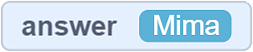
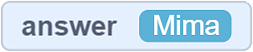
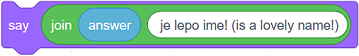

Variabla¶
Ne besojmë se ju e dini se shumë njerëz mund të përdorin një program dhe që ju e dini këtë nga përvoja juaj. Ne krijojmë programe me qëllimin për të bërë më të lehtë zgjidhjen dhe kryerjen e detyrave. Ne i krijojmë ata që të argëtohen, të pushojnë dhe të lidhen me njerëz të tjerë.
Fakti që një program mund të përdoret nga njerëz të shumtë, të cilët futin të dhënat e tyre dhe marrin rezultate përkatëse, na tregon se programimi ka një koncept të shkëlqyeshëm për administrimin dhe përdorimin e kujtesës në kompjuter.
Mendoni për kujtesën e një pajisje dixhitale si një të madhe, nënkuptojmë një dhomë të madhe, pothuajse të pafund me rreshta dhe rreshta rafte. Tani, imagjinoni se mund të vendosni të dhëna në çdo ndarje në çdo raft. Më në fund, imagjinoni që ju mund të emëroni secilën prej këtyre ndarjeve çfarëdo që dëshironi dhe, sa më shpejt të thërrisni emrin, informacioni në të bëhet menjëherë i disponueshëm.
Ne i quajmë këto “ndarje” të memorjes kompjuterike variabla. Një variabël potencialisht mund të përmbajë vetëm një pjesë të informacionit (një numër, varg, vlera të vërteta ose false, etj.).
Ask and wait¶
- Në kategorinë Sensing ekziston një bllok Ask and wait | BlokAskWait |. Ky bllokim na lejon të kërkojmë nga përdoruesi diçka (zakonisht në formën e një kërkese ose një pyetje), dhe pastaj të presim që përdoruesi të klikojë butonin |Stikliranje| ose shtypni Enter.
- Përgjigja e përdoruesit futet në variablin
 , dhe programi vazhdon të funksionojë.
, dhe programi vazhdon të funksionojë.  Është më mirë që ta përdorim menjëherë këtë bllok. Ne do të krijojmë një program në të cilin macja i kërkon përdoruesit emrin e tij / saj, dhe pastaj përsërit emrin dhe thotë se është një emër shumë i bukur.
Është më mirë që ta përdorim menjëherë këtë bllok. Ne do të krijojmë një program në të cilin macja i kërkon përdoruesit emrin e tij / saj, dhe pastaj përsërit emrin dhe thotë se është një emër shumë i bukur.

- Prandaj, do ta fillojmë programin duke klikuar në flamurin e gjelbër. Pas komandës
 , programi ndalon së funksionuari, duke pritur që përdoruesi të shkruajë përgjigjen e tij / saj në fushën hyrëse dhe të klikojë në butonin |tikliranje| ose shtypi Enter. Në atë moment, përmbajtja e variablës nuk ekziston
, programi ndalon së funksionuari, duke pritur që përdoruesi të shkruajë përgjigjen e tij / saj në fushën hyrëse dhe të klikojë në butonin |tikliranje| ose shtypi Enter. Në atë moment, përmbajtja e variablës nuk ekziston  .
. - Kur përdoruesi hyn në përgjigjen (psh. Mima) dhe klikon butonin
 ose shtyp Enter, përmbajtja e variablës do të jetë .
ose shtyp Enter, përmbajtja e variablës do të jetë .
Tani, macja mund të thotë vargun , të cilën ne e bëmë duke përdorur bllokun për lidhjen e string  (në fushën apple vendosim ndryshoren , dhe në fushën banana vendosim vargun “është një emër i bukur!”.
(në fushën apple vendosim ndryshoren , dhe në fushën banana vendosim vargun “është një emër i bukur!”.
Në figurën më poshtë, mund ta shihni programin tonë kur të funksionojë.

Creating Variables¶
Le të shohim situatën kur përdoruesi fut 4 numra, atëherë programi shton numrat dhe tregon shumën. Është e vërtetë që blloku Ask and Wait  lejon përdoruesin të fusë një vlerë të caktuar, e cila më pas do të vendoset në ndryshoren . Sidoqoftë, çfarë ndodh kur kemi nevojë për 4 përgjigje?
lejon përdoruesin të fusë një vlerë të caktuar, e cila më pas do të vendoset në ndryshoren . Sidoqoftë, çfarë ndodh kur kemi nevojë për 4 përgjigje?
- 50
- Variabli përmban vetëm një pjesë të informacionit (një numër, varg, vlera e vërtetë ose false, etj.). Mendoni përsëri dhe zgjidhni përgjigjen e saktë.
- 30
- 20
- 80
:feedback_b: Variabli përmban vetëm një pjesë të informacionit (një numër, varg, vlera e vërtetë ose false, etj.). Mendoni përsëri dhe zgjidhni përgjigjen e saktë. :feedback_c: Variabli përmban vetëm një pjesë të informacionit (një numër, varg, vlera e vërtetë ose false, etj.). Mendoni përsëri dhe zgjidhni përgjigjen e saktë. :feedback_d: Keni të drejtë, mirë! Ndryshorja | VAnswer | përmban vetëm përgjigjen përfundimtare të përdoruesit, dhe ky është numri 20. Sprite do të thotë 80 (20 + 20 + 20 + 20).
Përdoruesi hyn numrat e mëposhtëm njëri pas tjetrit: 5, 10, 15 dhe 20. Kur programi i treguar në figurë të funksionojë, sprite do të thotë:
Është e qartë se kemi nevojë për më shumë se një ndryshore që programi të jetë në gjendje të shfaqë shumën e saktë.
Krijojmë variablat në kategorinë Variables, duke klikuar në butonin Make a variable. Do të hapet një dritare ku mund të shkruajmë emrin e variablës, dhe më pas vendosim nëse duam ta bëjmë atë të disponueshëm për të gjitha sprites ose vetëm për sprite që është aktive ndërsa jemi duke krijuar variablën. Ne gjithashtu mund të kontrollojmë opsionin që ruan variablën në server, në renë e të dhënave. Më në fund, duke klikuar butonin OK krijon variablën.
Në figurën më poshtë, ne mund të shohim bllokun, i cili do të vihet në dispozicion për ne pasi të kemi krijuar ndryshoren. Me bllokun e parë, do të vendosim vlerën e variablës, e dyta që mund të përdorim nëse duam ta rrisim ose ulim atë vlerë, ndërsa e treta dhe e katërta përdoren për ta bërë variablën të dukshme ose për ta fshehur atë.

:answer_b: Drejtimi i skenareve A dhe B ka rezultate të ndryshme :correct: a :feedback_a: Bëhu mirë! Edhe pse ato janë të ndryshme, ekzekutimi i të dy programeve ka të njëjtin rezultat. :feedback_b: Mendoni për përgjigjen tuaj. Nëse akoma mendoni njësoj, krijoni këto programe në Scratch dhe drejtojini ato. Mos harroni të rregulloni në mënyrë që vlerat e variablave të mund të shihen në skenë.
- Analizoni skriptet dhe shënoni deklaratën e saktë: